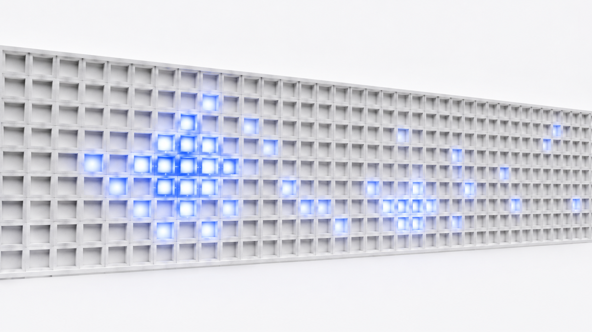
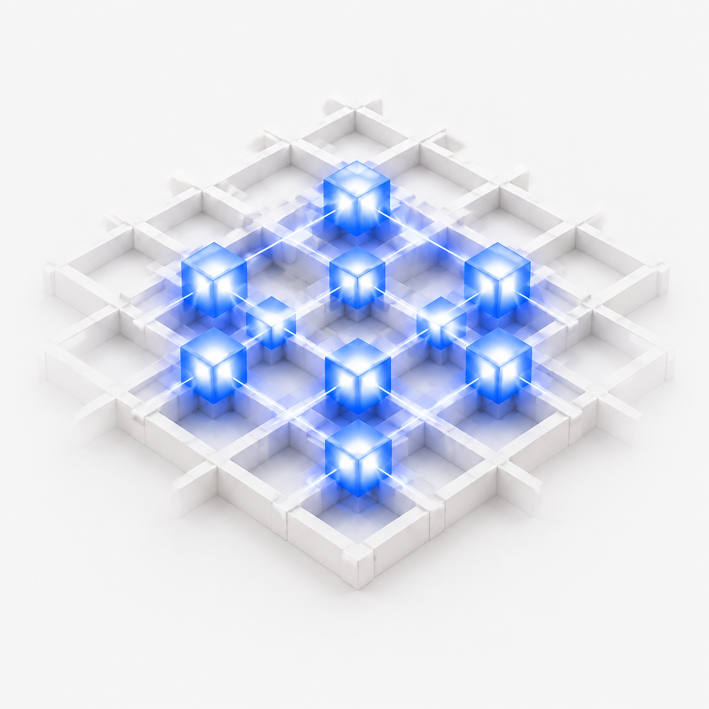
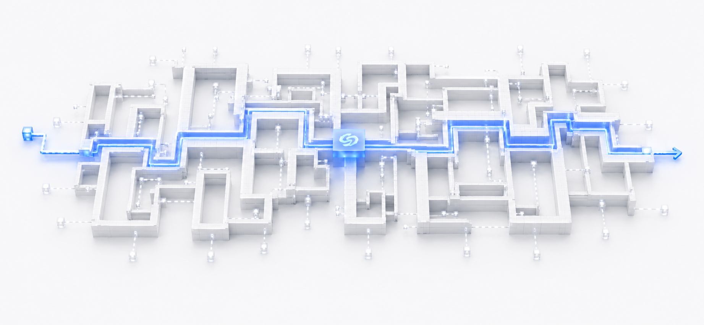
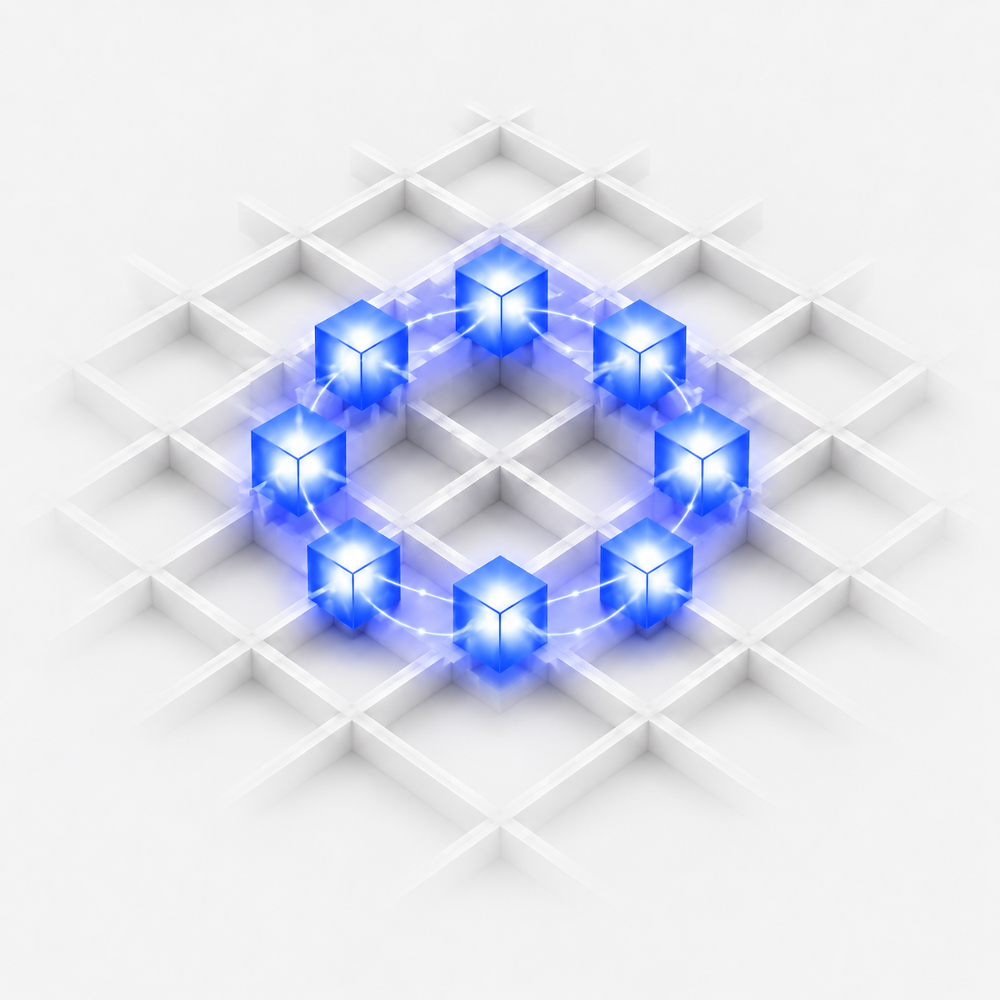
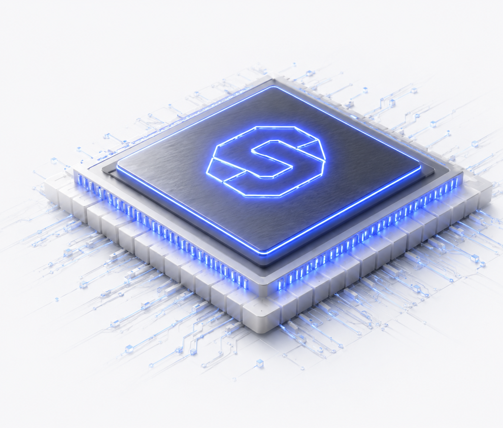

Technology for state-resident structural computing.
We unify state, structure, and execution in a single deterministic architecture — eliminating unnecessary movement, reducing latency and energy, and unlocking a new class of intelligent systems.
Resident Structural Matrix
State is encoded in a persistent structural matrix at the heart of the system. It is the system's memory and its map at once.

State-Local
Compute Domain
Compute happens where the state lives, inside highly local domains. Movement across domains is minimized by design.

Compiler-Defined
State Paths
The compiler orchestrates deterministic state paths for execution and dataflow. Paths are defined ahead of execution, not at runtime.

Cyclic Structural
State Flow
State transitions are controlled through activation, transition, and return — enabling continuous evolution without reset.

Execution
on Silicon
Execution happens on custom silicon designed for persistent state, deterministic paths, and local compute — not retrofitted onto general-purpose hardware.
